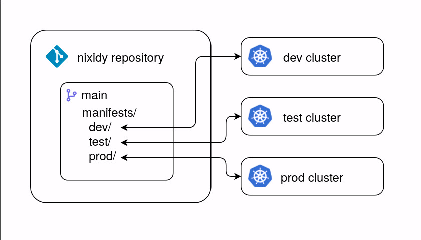
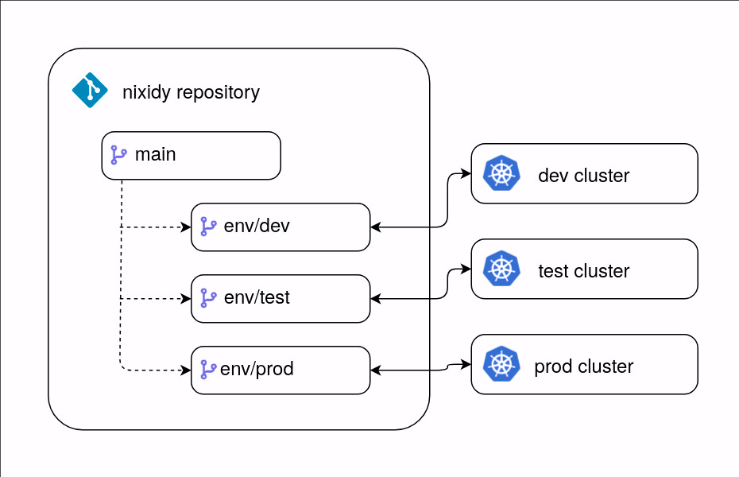
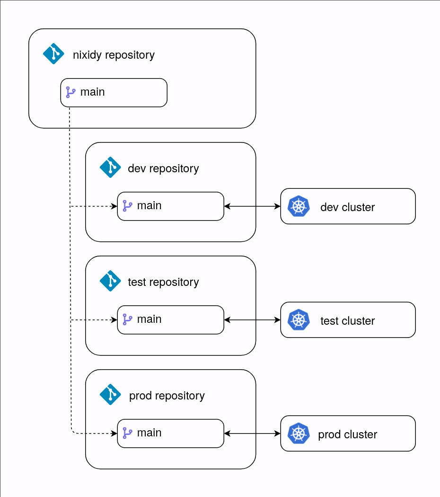

Monorepo#
With this strategy everything happens on the main/master branch. With every change to nixidy modules should result in a rebuild and the resulting manifests will be put in a sub-directory on the same branch.

The biggest gain from using this strategy is fast iteration locally as any change made to a nixidy module can be previewed by running nixidy switch .#<env> and then followed by git diff to see what has actually changed in the generated manifests.
This strategy does require more complicated access control mechanism such as CODEOWNER file to make sure not everyone can change the generated manifests.
Setup#
In a module that's common to all the environment the target repository and branch needs to be set.
{
# Set the target repository for the rendered manifests
# and applications.
# This should be replaced with yours.
nixidy.target.repository = "https://github.com/arnarg/nixidy-demo.git";
# Set the target branch the rendered manifests for every
# environment should be pushed to in the repository defined
# above.
nixidy.target.branch = "main";
}
And in a module that's specific to each environment the target root path needs to be set.
{
# Set the target sub-directory to copy the generated
# manifests to when running `nixidy switch .#dev`.
nixidy.target.rootPath = "./manifests/dev";
}
Tip
When using mkEnvs from nixidy, each environment's rootPath is automatically set to ./manifests/${dev}.
Environment branches#
With this strategy generated manifests are committed and pushed to separate environment specific branches. As these branches will not share any git history with the main branch or other environment branches (this is not git flow) they need to be created as orphan branches.

The biggest gain from this strategy is that it's simpler to implement access control compared to the monorepo, the branches can be setup with basic branch protection rules.
Setup#
In a module that's common to all the environments the target repository needs to be set. Unless you want the root path to differ between the environment's that can also be set here.
{
# Set the target repository for the rendered manifests
# and applications.
# This should be replaced with yours.
nixidy.target.repository = "https://github.com/arnarg/nixidy-demo.git";
# The generated manifests should be at the root of
# each environment branch.
nixidy.target.rootPath = "./";
}
And in a module that's specific to each environment the target branch needs to be set.
{
# Set the target branch the rendered manifests for _this_
# environment should be pushed to in the repository defined
# above.
nixidy.target.branch = "env/dev";
}
Note
The environment branches need to be created manually and they need to be created as orphan branches.
git checkout --orphan env/dev
echo "# env/dev" > README.md
git add README.md
git commit -m "Initial commmit"
git push -u origin env/dev
Environment repositories#
With this strategy generated manifests are committed and pushed to separate repositories entirely.

The biggest gain from this strategy is that it's possible to go even further with access control from the environment branches.
Setup#
In a module that's common to all the branches only the root path should be set, unless that should differ between the environments.
{
# The generated manifests should be at the root of
# each environment repository.
nixidy.target.rootPath = "./";
}
And in a module that's specific to each environment the target repository and target branch needs to be set.
{
# Set the target repository for the rendered manifests
# and applications.
# This should be replaced with yours.
nixidy.target.repository = "https://github.com/arnarg/nixidy-demo-dev.git";
# Set the target branch the rendered manifests for _this_
# environment should be pushed to in the repository defined
# above.
nixidy.target.branch = "main";
}